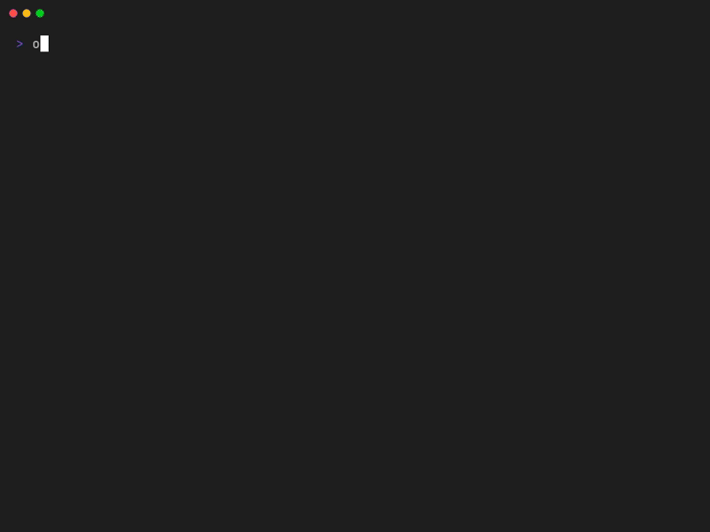
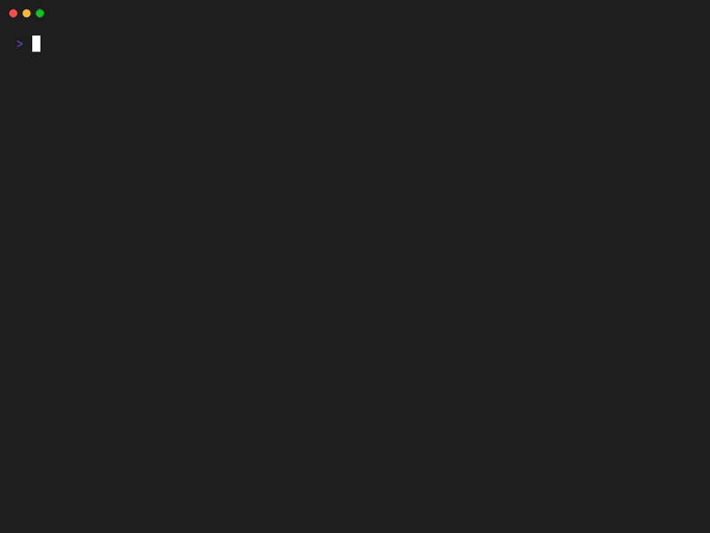

Command Line Interface (CLI)

Remember that Onzr is a CLI (Command Line Interface) and that we love UNIX. That being said, you won't be surprised to pipe Onzr commands to achieve what you want.
onzr search --artist "Lady Gaga" --ids --first | \
onzr artist --top --limit 20 --ids - | \
onzr add -
In this example, we will be adding Lady Gaga's top 20 most listened tracks to the player queue.
init
The init command creates Onzr configuration file:
It is supposed to be run once to be able to start the server or to use other commands.
Tip
This command will prompt for an ARL token. If you don't know how to find
it, please follow this
guide.
config
The config command provides various operations related to Onzr's
configuration. By default, it will display your current configuration in YAML
format.
The output should look like:
ARL: "configuredarl"
# QUALITY: MP3_128
# DEBUG: false
# SCHEMA: http
# HOST: localhost
# PORT: 9473
# API_ROOT_URL: /api/v1
# TRACK_STREAM_ENDPOINT: /queue/{rank}/stream
DEEZER_BLOWFISH_SECRET: "g4el58wc0zvf9na1"
# THEME:
# # Base palette
# primary_color: "#9B6BDF"
# secondary_color: "#75D7EC"
# tertiary_color: "#E356A7"
# # Entities
# title_color: "#9B6BDF"
# artist_color: "#75D7EC"
# album_color: "#E356A7"
# # Messages
# alert_color: "red"
Using the --path (or -p) option will only display the configuration file
path:
And you can also edit your configuration using the --edit (or -e):
It will start your default editor with your configuration loaded. Save it and you're good to go.
Tip
You can set your default editor using the $EDITOR environment variable.
serve
The serve command should be run once to start Onzr web server:
Once ran, Onzr server main instance is active (by default at: localhost:9473).
Pro Tip ™
You should launch a new terminal to run other commands communicating with the server.
Alternatively, if you prefer to use the same terminal, you can run the server in the background and only print error (and higher) logger events:
search
Onzr works extensively using Deezer's identifiers (IDs) for artists, albums and
tracks. As you may not know them (yet?), you can start exploring Deezer using
the search command:
You can search by artist, album or track using the corresponding flag, e.g. if you are looking for Lady Gaga:
The command output looks like:
Use the --ids flag to only print identifiers to the standard output if your
intent is to pipe your search result to another command (e.g. artist or
play).
- 💡 the
-argument of theartistcommand indicates to read artist ID fromstdin - the
--releaseflag adds theReleasedcolumn with tracks release date.
Your search result piped to the artist command display the artist top tracks (with release dates):
Tip
The search command --strict flag decreases fuzzyness in search results.
artist
The artist command allows to explore artist top tracks and radios. So you want
to explore Eric Clapton's world (ID 192)?
Tip
Remember: you can use the search command as a starting point to achieve
the same task if you don't remember artists IDs (I don't 😅):
And there it is! Eric Clapton's top tracks:

Do you prefer a radio inspired by Eric Clapton?
Enjoy:

You can also explore artist's albums using the --albums option:
There you go, here is Radiohead's discography:

album
The album command lists album tracks to check or play them:
And there it is:
To play the entire album, don't forget to list only track ids and pass them to
the add command:
onzr search --album "Friday night in San Francisco" --ids --first | \
onzr album --ids - | \
onzr add -
playlist
The playlist command lists playlist tracks to check or play them:
And there it is:
mix
The mix command generates playlists using various artists definition. You can
generate a "The Big Four" playlist on-the-fly as follow:
There is the magic 💫

Tip
You may adapt the --limit 10 option to have more or less tracks
per-artist (defaults to 10).
Guess what? You can have more magic by generating a "deep mix" 🪄
Hello serendipity 🎉

As expected, you can pipe your mix with the --ids flag to the add command:
add
The add allows you to add tracks to the queue. Tracks identifiers should be
given as command arguments:
This command adds 3 tracks to the queue.
As already seen, you can read track identifiers from the standard input by
using the - special identifier:
This command adds a track search result to the queue.
queue
The queue command list tracks added to the queue:
clear
The clear command stops the player and removes all tracks from the queue:
now
The onzr now command gives you details about the track being currently played:
You can follow tracks being played in live using the -f option:
Tip
Hit Ctrl+C to kill the command and restore your shell prompt.
play
The play command does what it says: it (re-)starts playing queued tracks.
onzr search --artist "Go go penguin" --ids --first | \
onzr artist --ids - | \
onzr add - && \
onzr play
This command plays "Go go penguin" top tracks; considering an empty queue before starting the command.
Considering you have already queued tracks, you can start playing a track in the queue given its rank (1-based numbering):
Tip
You can get the track rank by listing queued tracks using the onzr queue
command.
pause
The pause command toggles the player pause state:
stop
The stop command stops the player:
next
The next command plays the next track in queue:
Note that it has no effect if you reach the end of the queue.
previous
The previous command plays the previous track in queue:
Note that it has no effect if you reach the beginning of the queue.
state
The state command gives you info about the server (player and queue) state:
version
The version command is useful to know which version of Onzr you are running:
openapi
The openapi command prints the OpenAPI schema of Onzr HTTP API in JSON format.